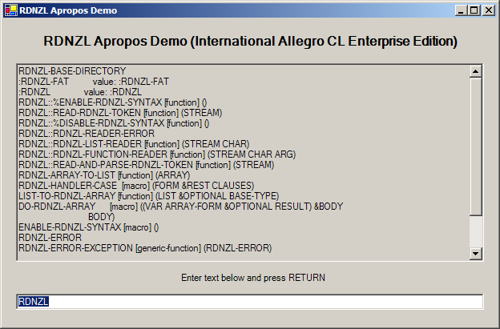
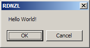

RDNZL - A .NET layer for Common Lisp
RDNZL (pronounced "Redunzl") enables Common Lisp applications to interact with .NET
libraries. It's more or less a foreign function interface for .NET
languages like C# built atop the C foreign function interface.
RDNZL comes with a BSD-style
license so you can basically do with it whatever you want.
Download shortcut: http://weitz.de/files/RDNZL.tar.gz.

- Examples
- Download and installation
- Support and mailing lists
- Supported Lisp implementations
- The RDNZL dictionary
- Representation and creation of .NET objects
container-p
box
unbox
new
cast
make-null-object
*coerce-double-floats-to-single*
- Accessing .NET methods, properties, and fields
invoke
property
field
ref
- Arrays and enumerations
aref*
do-rdnzl-array
list-to-rdnzl-array
rdnzl-array-to-list
integer-to-enum
enum-to-integer
or-enums
- Handling of .NET exceptions
rdnzl-error
rdnzl-error-exception
rdnzl-handler-case
- Type names and assemblies
import-type
load-assembly
import-assembly
import-types
use-namespace
unuse-namespace
unuse-all-namespaces
- Special reader syntax
enable-rdnzl-syntax
disable-rdnzl-syntax
- Direct calls
define-rdnzl-call
- Saving images and application delivery
shutdown-rdnzl
init-rdnzl
- Implementation details and things to watch out for
- Acknowledgements
Here's a short example session (using AllegroCL):
CL-USER(1): (load "/home/lisp/RDNZL/load.lisp")
; Loading C:\home\lisp\RDNZL\load.lisp
; Fast loading C:\home\lisp\RDNZL\packages.fasl
; Fast loading C:\home\lisp\RDNZL\specials.fasl
; Fast loading C:\home\lisp\RDNZL\util.fasl
; Fast loading C:\home\lisp\RDNZL\port-acl.fasl
; Fast loading from bundle code\IORDEFS.fasl.
; Fast loading from bundle code\EFMACS.fasl.
; Fast loading C:\home\lisp\RDNZL\ffi.fasl
; Foreign loading RDNZL.dll.
; Fast loading C:\home\lisp\RDNZL\container.fasl
; Fast loading C:\home\lisp\RDNZL\reader.fasl
; Fast loading C:\home\lisp\RDNZL\arrays.fasl
; Fast loading C:\home\lisp\RDNZL\adapter.fasl
; Fast loading C:\home\lisp\RDNZL\import.fasl
T
CL-USER(2): (in-package :rdnzl-user)
#<The RDNZL-USER package>
RDNZL-USER(3): (enable-rdnzl-syntax)
RDNZL-USER(4): (import-types "System.Windows.Forms"
"MessageBox" "MessageBoxButtons" "DialogResult")
NIL
RDNZL-USER(5): (use-namespace "System.Windows.Forms")
RDNZL-USER(6): (defun message-box (text &optional (caption "RDNZL"))
;; check if the "OK" button was pressed
[Equals [MessageBox.Show text caption
;; we want the message box to have "OK" and "Cancel" buttons
[$MessageBoxButtons.OKCancel]]
[$DialogResult.OK]])
MESSAGE-BOX
RDNZL-USER(7): (message-box "Hello World!") ;; user presses "OK" button
T
RDNZL-USER(8): (message-box "Hello World!") ;; user presses "Cancel" button
NIL
(Note: All examples shown here are included in the examples folder of the distribution.)
For a more interesting example which interacts with custom .NET code
and demonstrates callbacks into Lisp consider the .NET library
AproposGUI.dll (put it into your Lisp's application folder) created
with this C# code:
// compile this with:
// csc.exe /target:library AproposGui.cs
using System;
using System.Collections;
using System.ComponentModel;
using System.Drawing;
using System.Data;
using System.Windows.Forms;
namespace AproposGUI {
public class AproposControl : System.Windows.Forms.UserControl {
public System.Windows.Forms.TextBox textBox;
public System.Windows.Forms.TextBox listBox;
private System.Windows.Forms.Label label;
public System.Windows.Forms.Label title;
private delegate string callback(string input);
private System.ComponentModel.Container components = null;
public AproposControl() {
InitializeComponent();
}
protected override void Dispose(bool disposing) {
if (disposing) {
if (components != null)
components.Dispose();
}
base.Dispose(disposing);
}
private void InitializeComponent() {
this.textBox = new System.Windows.Forms.TextBox();
this.listBox = new System.Windows.Forms.TextBox();
this.label = new System.Windows.Forms.Label();
this.title = new System.Windows.Forms.Label();
this.SuspendLayout();
this.textBox.Location = new System.Drawing.Point(16, 344);
this.textBox.Name = "textBox";
this.textBox.Size = new System.Drawing.Size(584, 20);
this.textBox.TabIndex = 0;
this.textBox.Text = "";
this.listBox.Location = new System.Drawing.Point(16, 56);
this.listBox.Multiline = true;
this.listBox.Name = "listBox";
this.listBox.ReadOnly = true;
this.listBox.ScrollBars = System.Windows.Forms.ScrollBars.Vertical;
this.listBox.Size = new System.Drawing.Size(584, 248);
this.listBox.TabIndex = 1;
this.listBox.Text = "";
this.label.Location = new System.Drawing.Point(24, 312);
this.label.Name = "label";
this.label.Size = new System.Drawing.Size(576, 23);
this.label.TabIndex = 2;
this.label.Text = "Enter text below and press RETURN";
this.label.TextAlign = System.Drawing.ContentAlignment.MiddleCenter;
this.title.Font = new System.Drawing.Font("Microsoft Sans Serif", 12F, System.Drawing.FontStyle.Bold, System.Drawing.GraphicsUnit.Point, ((System.Byte)(0)));
this.title.Location = new System.Drawing.Point(24, 16);
this.title.Name = "title";
this.title.Size = new System.Drawing.Size(568, 24);
this.title.TabIndex = 3;
this.title.Text = "RDNZL Apropos Demo";
this.title.TextAlign = System.Drawing.ContentAlignment.MiddleCenter;
this.Controls.Add(this.title);
this.Controls.Add(this.label);
this.Controls.Add(this.listBox);
this.Controls.Add(this.textBox);
this.Name = "MainControl";
this.Size = new System.Drawing.Size(616, 384);
this.ResumeLayout(false);
}
}
}
Now load examples/apropos.lisp which looks like this:
 (in-package :rdnzl)
(enable-rdnzl-syntax)
(import-types "System.Windows.Forms"
"Application" "DockStyle" "Form" "MessageBox" "KeyPressEventHandler" "TextBox")
(import-types "AproposGUI"
"AproposControl")
(use-namespace "System.Windows.Forms")
(use-namespace "AproposGUI")
(defun copy-to-clipboard (text-box)
(let ((selection-start [%SelectionStart text-box])
(selection-length [%SelectionLength text-box])
(text-length [%Length (box [%Text text-box])]))
(setf [%SelectionStart text-box] 0
[%SelectionLength text-box] text-length)
[Copy text-box]
(setf [%SelectionStart text-box] selection-start
[%SelectionLength text-box] selection-length)))
(let (message-shown)
(defun fill-list-box (object event)
(when (char= [%KeyChar event] #\Return)
(cast object "TextBox")
(let* ((input-string [%Text object])
(input-length (length input-string)))
(when (plusp input-length)
(let ((apropos-text
(with-output-to-string (*standard-output*)
(apropos input-string)))
(list-box [$listBox (cast [%Parent object] "AproposControl")]))
(setf [%Text list-box] apropos-text)
(copy-to-clipboard list-box)
(unless message-shown
[MessageBox.Show "The output of APROPOS has been copied to the clipboard."
"RDNZL"]
(setq message-shown t)))
(setf [%SelectionStart object] 0
[%SelectionLength object] input-length))))))
(defun run-apropos-form ()
(let* ((control (new "AproposControl"))
(form (new "Form")))
(setf [%Dock control] [$DockStyle.Fill]
[%ClientSize form] [%ClientSize control]
[%Text form] "RDNZL Apropos Demo"
[%Text [$title control]]
(format nil "RDNZL Apropos Demo (~A)"
(lisp-implementation-type)))
[+KeyPress [$textBox control]
(new "KeyPressEventHandler" #'fill-list-box)]
[Add [%Controls form] control]
[Application.Run form]))
(disable-rdnzl-syntax)
(in-package :rdnzl)
(enable-rdnzl-syntax)
(import-types "System.Windows.Forms"
"Application" "DockStyle" "Form" "MessageBox" "KeyPressEventHandler" "TextBox")
(import-types "AproposGUI"
"AproposControl")
(use-namespace "System.Windows.Forms")
(use-namespace "AproposGUI")
(defun copy-to-clipboard (text-box)
(let ((selection-start [%SelectionStart text-box])
(selection-length [%SelectionLength text-box])
(text-length [%Length (box [%Text text-box])]))
(setf [%SelectionStart text-box] 0
[%SelectionLength text-box] text-length)
[Copy text-box]
(setf [%SelectionStart text-box] selection-start
[%SelectionLength text-box] selection-length)))
(let (message-shown)
(defun fill-list-box (object event)
(when (char= [%KeyChar event] #\Return)
(cast object "TextBox")
(let* ((input-string [%Text object])
(input-length (length input-string)))
(when (plusp input-length)
(let ((apropos-text
(with-output-to-string (*standard-output*)
(apropos input-string)))
(list-box [$listBox (cast [%Parent object] "AproposControl")]))
(setf [%Text list-box] apropos-text)
(copy-to-clipboard list-box)
(unless message-shown
[MessageBox.Show "The output of APROPOS has been copied to the clipboard."
"RDNZL"]
(setq message-shown t)))
(setf [%SelectionStart object] 0
[%SelectionLength object] input-length))))))
(defun run-apropos-form ()
(let* ((control (new "AproposControl"))
(form (new "Form")))
(setf [%Dock control] [$DockStyle.Fill]
[%ClientSize form] [%ClientSize control]
[%Text form] "RDNZL Apropos Demo"
[%Text [$title control]]
(format nil "RDNZL Apropos Demo (~A)"
(lisp-implementation-type)))
[+KeyPress [$textBox control]
(new "KeyPressEventHandler" #'fill-list-box)]
[Add [%Controls form] control]
[Application.Run form]))
(disable-rdnzl-syntax)
and evaluate (RUN-APROPOS-FORM). If you want to try this
several times, start the function in its own thread. In AllegroCL or LispWorks
that'd be:
(mp:process-run-function "apropos" #+:lispworks nil #'run-apropos-form)
The last example shows how easy it is to access web pages using the
.NET standard library:
RDNZL-USER(9): (import-types "System" "Net.WebClient")
NIL
RDNZL-USER(10): (defun download-url (url)
(let ((web-client (new "System.Net.WebClient")))
[GetString (new "System.Text.ASCIIEncoding")
[DownloadData web-client url]]))
DOWNLOAD-URL
RDNZL-USER(11): (download-url "http://nanook.agharta.de/")
"<HTML>
<HEAD>
<META HTTP-EQUIV=\"refresh\" CONTENT=\"5;URL=http://www.weitz.de/\">
</HEAD>
<BODY><center>
<table border=3 bordercolor=green cellpadding=5 cellspacing=5><tr><td align=center>
<pre>
Linux nanook 2.6.7 #1 Thu Jul 22 01:01:58 CEST 2004 i686 GNU/Linux
01:23:23 up 100 days, 19:43, 0 users, load average: 0.00, 0.00, 0.00
</pre>
</td></tr></table></center>
</BODY>
</HTML>
"
A bit more evolved:
RDNZL-USER(12): (import-types "System" "Net.WebException")
NIL
RDNZL-USER(13): (use-namespace "System.Net")
RDNZL-USER(14): (defun download-url (url)
(rdnzl-handler-case
(let ((web-client (new "WebClient")))
[GetString (new "System.Text.ASCIIEncoding")
[DownloadData web-client url]])
("WebException" (e)
(warn "Ooops, probably a typo: ~A" [%Message e])
nil)))
DOWNLOAD-URL
RDNZL-USER(15): (download-url "http://nanook.aharta.de/")
Warning: Ooops, probably a typo:
The underlying connection was closed: The remote name could not be resolved.
NIL
This'll also work with https URLs.
RDNZL together with this documentation can be downloaded from
http://weitz.de/files/RDNZL.tar.gz, the current version is 0.9.4. It
doesn't depend on any other Lisp libraries. The C++ source for the
shared library RDNZL.dll can be downloaded separately from
http://weitz.de/files/RDNZL_cpp.tar.gz but you don't need this archive
to deploy RDNZL - RDNZL.tar.gz already contains RDNZL.dll.
You can also access the current RDNZL source code (Lisp and C++) via CVS.
Before you load RDNZL make sure you have the .NET framework installed.
Then move the file RDNZL.dll to a location where your Lisp's FFI will
find it - the folder where your Lisp executable is located is
generally a good place for that.
Now, to compile and load RDNZL just LOAD the file load.lisp - that's
all. (Or alternatively use ASDF if you like - RDNZL comes with a
system definition for ASDF.)
Oh, and - for the moment - don't use SLIME together with
LispWorks when loading RDNZL - see this message for an explanation.
For questions, bug reports, feature requests, improvements, or patches
please use the rdnzl-devel
mailing list. If you want to be notified about future releases,
subscribe to the rdnzl-announce
mailing list. These mailing lists and the CVS repository were made available thanks to
the services of common-lisp.net.
RDNZL is currently targeted at Microsoft Windows. There are other
implementations of the CLR runtime for other operating systems but to
port the "glue" library RDNZL.dll you'll need something similar to
Microsoft's "Managed C++" which can mix managed and unmanaged code.
I'll gladly accepts patches to make RDNZL work on other platforms.
The current status for the main Win32 Common Lisp implementations is
as follows:
- Corman Common Lisp: Corman Lisp is fully supported thanks to the help of Roger Corman.
- ECL: I'm not familiar enough with ECL to port RDNZL
myself. Please send patches if you know how to do it.
- Franz AllegroCL: AllegroCL is fully supported thanks to the efforts of Charles A. Cox from Franz Inc.
- GNU CLISP: RDNZL has been ported to CLISP by Vasilis Margioulas. However, the port currently has some GC issues - it only works for simple, non-callback cases. This is probably due to missing MP support.
- LispWorks: LispWorks is fully supported.
- SBCL: Experimental support for the "port in progress" of SBCL to Win32. Based on the 0.9.9 binary release. The
APROPOS example doesn't work, most likely because SBCL/Win32 doesn't have MP yet.
All implementation-specific parts of RDNZL are located in files called
port-acl.lisp, port-ccl.lisp, port-lw.lisp, and so on. If you want to port RDNZL to
another Lisp, it should suffice to just create the corresponding
port-xx.lisp file for your implementation.
.NET objects are represented as containers and are printed like this
#<RDNZL::CONTAINER System.Object #xAE28E0>
where System.Object is the name of the .NET type of this
object and #xAE28E0 is the hexadecimal representation of a C pointer
that won't change during the lifetime of this object. (Internally
containers are implemented as structures but this might change in
future versions so you shouldn't rely on it.)
Note that each container has a .NET type that can be manipulated
independently from its object - see CAST.
As long as a container is accessible in Lisp its underlying .NET
object won't be garbage-collected in the CLR.
Whenever a RDNZL function accepts .NET objects as arguments (except
for the first argument of INVOKE, PROPERTY, and FIELD) you can also
provide the corresponding "native" Lisp objects as long as they can be
converted to .NET objects by the function BOX. On the other hand, if
a RDNZL function returns a .NET object, it will be automatically
translated to a Lisp object by UNBOX if possible. If a RDNZL function
call doesn't return a result (i.e. if its return type is System.Void),
then the keyword :VOID is returned. If a NULL object is returned,
RDNZL returns NIL and T as a second return value because otherwise
there'd be no difference from returning a false boolean value.
[Function]
container-p object => generalized-boolean
Returns true if object is a container, NIL otherwise.
[Function]
box object => container
Converts Lisp objects to containers wrapping a
corresponding .NET object if possible, otherwise an error is
signaled. Currently the following conversions are implemented:
| Lisp type | .NET type | Remark |
|---|
(signed-byte 32) | System.Int32 | |
(signed-byte 64) | System.Int64 | Only integers which aren't (SIGNED-BYTE 32). |
character | System.Char | |
string | System.String | |
pathname | System.String | The namestring of the pathname is used. |
double-float | System.Double | See *COERCE-DOUBLE-FLOATS-TO-SINGLE*. |
float | System.Single | Only floating point numbers which aren't DOUBLE-FLOAT. |
boolean | System.Boolean | |
[Function]
unbox container => object
Converts .NET objects wrapped in a container to a corresponding Lisp
object if possible, otherwise container is returned ummodified. Currently the following conversions are implemented:
| .NET type | Lisp type |
|---|
System.Int32 | integer |
System.Int64 | integer |
System.Char | character |
System.String | string |
System.Double | double-float |
System.Single | float |
System.Boolean | boolean |
[Function]
new type &rest args => new-instance
Creates and return a new instance of the .NET type type. Chooses the
constructor based on the signature determined by args. type can either
be a container representing a .NET type or a string naming the type.
If type is a delegate type, then there should be exactly one more
argument to NEW and it must be a Lisp closure with a corresponding
signature. This is how callbacks from .NET into Lisp are implemented. (See the second example above and look for KeyPressEventHandler.)
[Function]
cast container type => container
Changes the type of the .NET object represented by container to type
(a string naming the type or a container representing the type).
Returns container.
[Function]
make-null-object type-name => container
Returns a new NULL .NET object of the type named by the string type-name.
[Special variable]
*coerce-double-floats-to-single*
If the value of this variable is true,
then BOX will convert a
Lisp DOUBLE-FLOAT
value to System.Single. This is mainly interesting for
LispWorks, where Lisp floats are always DOUBLE-FLOAT.
This section describes the "low-level" access to .NET class members. See the section about the special reader syntax for another approach.
[Function]
invoke object method-name &rest other-args => result
Invokes the public .NET method named by the string method-name. If
object is a container, an instance method is
invoked. If object is a string, the static method
of the type named by this string (which is looked up
using System.Type::GetType) is invoked.
Otherwise, object should be a two-element list
where the first element is a container representing an assembly and
the second element is a string denoting a static method (which will be
looked up in that specific assembly).
[Accessor]
property object property-name &rest indexes => property-value
(setf (property object &rest indexes) new-value)
Gets or sets the public .NET property named by the string
property-name. If object is a container, an instance property is
accessed. If object is a string, the static property of the type named
by this string is accessed.
[Accessor]
field object field-name => field-value
(setf (field object) new-value)
Gets or sets the public .NET field named by the string field-name. If
object is a container, an instance field is accessed. If object is a
string, the static field of the type named by this string is accessed.
[Function]
ref object => container
Makes a pass-by-reference type out of
object and returns object. If
object is not a container,
it'll be boxed first. This function makes only
sense if object is used as an argument to INVOKE! (And after INVOKE has been
called object will be reset to its underlying type so you have to
re-apply REF if you want to use it as a pass-by-reference argument in
another .NET call.) Note that while this is kind of tedious it
corresponds to the C# semantics.
Here's an example: If you have a .NET class defined like this (in C#)
public class Class1 {
public static void foo (ref int a) {
a++;
}
}
then you can do this (see below for the reader syntax) in Lisp
RDNZL-USER(16): (let ((a (box 41)))
[Class1.foo (ref a)]
(unbox a))
42
while the evaluation of [Class1.foo 41] (or [Class1.foo (box 41)] which is equivalent) will signal an error because the
method won't even be found - the signature of foo is (System.Int32&), not (System.Int32).
This section assembles some convenience functions for .NET arrays and
enumerations.
[Accessor]
aref* array &rest subscripts => value
(setf (aref* array &rest subscripts) new-value)
Gets or sets the element of the .NET array array with the
subscripts subscripts.
[Macro]
do-rdnzl-array (var array-form &optional result) &body body => value*
array-form should be a form which evaluates to a container wrapping a
.NET array of rank 1. The body will be evaluated with var bound to
each element of this array in turn. Finally, the result of evaluating
the form result is returned.
[Function]
list-to-rdnzl-array list &optional base-type => array
Creates and returns a .NET array of base type base-type and rank 1
with the elements from the Lisp list list. base-type can be a
container representing a .NET type or a string naming the type. The
default for base-type is the .NET root type System.Object.
[Function]
rdnzl-array-to-list array => list
Converts a .NET array array of rank 1 to a Lisp list with the same
elements.
[Function]
integer-to-enum number type => enum
Converts the Lisp integer number to a .NET System.Enum object of
type type (a string naming the type or a container representing the type).
[Function]
enum-to-integer enum => number
Converts the .NET object enum of type System.Enum to a Lisp integer. This is a destructive operation on enum.
[Function]
or-enums &rest enums => enum
Combines several .NET objects of type System.Enum with a bit-wise logical or
and returns the result. All arguments must be of the same .NET type
and there must be at least one argument.
.NET exceptions are propagated to Lisp as described below.
[Condition type]
rdnzl-error
Exceptions raised during .NET calls are signaled in Lisp as errors of this type.
[Function]
rdnzl-error-exception condition => exception
If condition is an error of type RDNZL-ERROR, then this function will
return the .NET exception object that was actually raised.
[Macro]
rdnzl-handler-case form &rest clauses => result*
Like HANDLER-CASE
but only for conditions of type RDNZL-ERROR. The typespecs are
either strings (naming a .NET error type) or of the form (OR string-1 ... string-n). A :NO-ERROR clause is also allowed.
Whenever a RDNZL function accepts a string as a type name you usually
have to provide the full assembly-qualified name of that type (with
the exception of types in mscorlib.dll), i.e. something like
"System.Windows.Forms.Button, System.Windows.Forms, Version=1.0.5000.0, Culture=neutral, PublicKeyToken=b77a5c561934e089"
This is boring and error-prone, so RDNZL provides two ways to make it
easier for you: You can import types and you can use namespaces.
If you import a type, RDNZL internally remembers its assembly-qualified
name and you can now use its full name (like
"System.Windows.Forms.Button") instead.
If this is still too long for you, you can use namespaces to further
abbreviate type names. So, if you are using the namespace
"System.Windows.Forms", you can just call the type "Button". Note that
this'll only work for imported types, though.
[Function]
import-type type &optional assembly => type'
Imports the .NET type type, i.e. registers its name as one that can be
abbreviated (see USE-NAMESPACE) and creates a mapping from its short
name to its assembly-qualified name (if necessary). If type is a
string and assembly is NIL, then the function will try to create the
type from the string with the static .NET method System.Type::GetType.
If type is a string and assembly is a container representing an
assembly, then instead the .NET instance method
System.Reflection.Assembly::GetType will be used. If type is already
a .NET object (i.e. a container), then the function will just register
its name. If assembly is a true value, then the name will also be
mapped to its assembly-qualified name. In all cases the type itself
(as a container) will be returned.
[Function]
load-assembly name => assembly
Loads and returns the assembly with the name name (a string), uses the
static .NET method System.Reflection.Assembly::LoadWithPartialName
internally.
[Function]
import-assembly assembly => assembly'
Imports all public types of the assembly assembly (a string or a
container). If assembly is a string, then the assembly is first loaded
with LOAD-ASSEMBLY. Returns assembly as a container.
[Function]
import-types assembly-name &rest type-names => NIL
This is a shortcut. It loads the assembly named by the string assembly-name and
imports all types listed from this assembly. The assembly name is
prepended to the type names before importing them. All arguments
should be strings.
[Function]
use-namespace namespace => |
Adds the .NET namespace namespace
(a string) to the list of namespaces that will be prefixed when trying
to resolve a type name. After calling this function
namespace will be the first entry in this list
unless it has already been there. namespace must
not end with a dot because a dot will be prepended automatically.
[Function]
unuse-namespace namespace => |
Removes the .NET namespace namespace (a string) from the list of
namespaces that will be prefixed when trying to resolve a type name.
[Function]
unuse-all-namespaces => |
Removes all entries from the list of namespaces that will be prefixed
when trying to resolve a type name.
In order to make entering .NET forms easier RDNZL provides a modified
read syntax which consists of two parts.
First, the left and right bracket characters are modified to be
terminating macro characters. A form like
[IsSubclassOf type other-type]
is read as follows: Directly following the left bracket should be a
symbol (IsSubclassOf in this example) which is read as if the standard
readtable was used (except for the special role of the brackets) but
with case preserved. The rest (type other-type in this case) is read
up to the closing bracket by READ-DELIMITED-LIST. This results in a call
to INVOKE like this:
(invoke type "IsSubclassOf" other-type)
If the symbol starts with a percent or dollar, sign then it is removed
and the result is a call to PROPERTY or FIELD respectively:
[%IsInterface type] => (property type "IsInterface")
[$textBox control] => (field control "textBox")
If the symbol contains a dot, then in all three cases this'll result in
a static invocation where the part before the (last) dot is used as the name
of the type:
[System.Environment.Exit] => (invoke "System.Environment" "Exit")
[%System.Environment.UserName] => (property "System.Environment" "UserName")
[$OpCodes.Switch] => (field "Opcodes" "Switch")
If the symbol starts with a plus or minus sign, then this sign is replaced
with "add_" or "remove_" respectively. This is the convention used to
add or remove event handlers:
[+KeyPress text-box (new "KeyPressEventHandler" #'reply)] => (invoke text-box "add_KeyPress" (new "KeyPressEventHandler" #'reply))
The second syntax change is the addition of a new dispatch character
to the # (sharpsign) reader macro, namely ` (backquote). This is
intended to be used similarly to #' but with the syntax described
above, i.e. you can write things like
(mapcar #`%CanFocus list-of-forms)
(apply #`GetMethod method-info other-args)
(funcall #`(setf $textBox) new-text-box control)
Note that this dispatch character also recognizes function names of
the form (SETF symbol).
The RDNZL source code contains more examples of using this modified
syntax.
Read Tim Bradshaw's article
about the implications
of a reader syntax as described above.
[Macro]
enable-rdnzl-syntax => |
Enables RDNZL reader syntax. After loading RDNZL this reader syntax is by default not enabled.
[Macro]
disable-rdnzl-syntax => |
Restores the readtable which was active before the last call to
ENABLE-RDNZL-SYNTAX. If there was no such call, the standard readtable
is used.
Usually, each time you call into .NET via INVOKE, PROPERTY, or FIELD RDNZL will have to search for the
corresponding .NET member via reflection. This can be avoided by
defining direct calls via DEFINE-RDNZL-CALL. For example, instead of calling
(invoke "System.Math" "Max" 3.5 3.6)
you'd first define a function DOTNET-MAX like this
(define-rdnzl-call dotnet-max
(:dotnet-name "Max"
:type-name "System.Math")
((x "System.Double")
(y "System.Double")))
and then call it as if it were a normal Lisp function (no need for the pesky reader syntax):
(dotnet-max 3.5 3.6)
Experiments with AllegroCL and LispWorks show that in the example above you'll safe about half the execution time and half the consing if you use a direct call instead of INVOKE. (It's still faster to call MAX, though... :)
The file examples/apropos2.lisp shows how you'd code the APROPOS example with direct calls.
[Macro]
define-rdnzl-call lisp-name (&key member-kind dotnet-name type-name doc-string) args => lisp-name
Defines a Lisp function named by the function name lisp-name which invokes the .NET member named by the string dotnet-name. member-kind must be one of the keywords :METHOD, :PROPERTY, or :FIELD and obviously determines whether a method, a property, or a field is to be invoked - the default is :METHOD. If type-name is NIL (which is the default), an instance member is invoked, otherwise type-name should be a string naming a .NET type and a static member of this type is invoked instead. doc-string, if provided, should be a string, namely the documentation string for the Lisp function which is created. If doc-string is NIL (which is the default), a generic documentation string will be created.
If dotnet-name is NIL (which is the default), then the name of the .NET member will be created from lisp-name be the following rules:
Take the symbol name of lisp-name and if it does not consist solely of hyphens and single-case letters, just return it. Otherwise remove the hyphens and downcase all letters except for the first one and those that follow a hyphen - these are upcased. If lisp-name is a list (SETF symbol), then we use symbol instead of lisp-name. Here are some examples (note that the package doesn't matter):
lisp-name | dotnet-name |
|---|
|Foo| | "Foo" |
FOO | "Foo" |
HELP-ME | "HelpMe" |
(SETF TEXT-BOX) | "TextBox" |
Finally, args describes the arguments to the
newly-created function. It is a list of pairs
(ARG-NAME TYPE-NAME) where ARG-NAME is
a symbol naming the argument and TYPE-NAME is a string
naming the .NET type of the argument. Note that for instance members
the type of the first argument is the .NET type the member belongs to
- this is not the case for static members.
For properties and fields, lisp-name can also be a
list (SETF symbol) in which case a setter function
for the corresponding property or field is generated. Note that the
parameter for the new value is not part of the signature described by args.
Note: Currently (version 0.6.0) there are some issues with direct
calls and Corman Lisp, so you shouldn't use DEFINE-RDNZL-CALL with CCL
(or you could help fixing these problems).
It is possible to save images with RDNZL loaded or to deliver RDNZL
executables. However, you have to watch out for certain things: Make
sure that no references to .NET objects remain in the image and
finally call SHUTDOWN-RDNZL prior to saving or delivering.
If you restart the image or start the executable, make sure to call
INIT-RDNZL before accessing any RDNZL functionality. That should do
the trick.
The examples directory of the RDNZL distribution contains sample
delivery files for AllegroCL, Corman Lisp, and LispWorks to demonstrate this.
[Function]
shutdown-rdnzl &optional no-gc => |
Prepares RDNZL for delivery or image saving. After calling this
function RDNZL can't be used anymore unless INIT-RDNZL is called
again. If no-gc is NIL (the default), a full garbage collection is
also performed.
[Function]
init-rdnzl => |
Initializes RDNZL. This function must be called once before RDNZL is
used. It is automatically called when you load RDNZL.
The first implementation of RDNZL (which I demoed in Amsterdam) used
the MOP to map .NET types to CLOS classes. I have removed this code
in favor of a simpler approach because using the MOP results in a lot
of overhead at runtime and doesn't work well with application
delivery. In fact, a lot of the design decisions in RDNZL are based on the
fact that I want to be able to easily deliver small executables. If it were just for speed and/or convenience, RDNZL would look differently.
If you're concerned about speed, keep in mind that calls into .NET are
expensive because a lot of marshalling of arguments is happening
behind the scenes and the system deploys the .NET reflection API at
runtime. It is advisable to keep interaction between .NET and Lisp out
of tight loops, i.e. to implement such loops either fully in Lisp or
fully in .NET.
If you want to know more about the way methods are
looked up in RDNZL, read Pedro Pinto's paper
about the implementation of Dot-Scheme the basics of which apply to
RDNZL as well.
The garbage collectors of Lisp and .NET should generally be able to
co-exist without problems. However, with delegates there's a potential
problem. Consider this example (from Pedro Pinto):
(let ((button (new "System.Windows.Form.Button")))
[+Click form (new "System.EventHandler"
(lambda (sender event-args)
(declare (ignore sender event-args))
(setf [%Text button] "Clicked!")))])
Now, RDNZL keeps a reference to BUTTON which is closed over by the
event-handler defined above and thus the .NET garbage collector won't
be able to get rid of the button. As a result it can't release the
event handlers of this button either and thus the Lisp garbage
collector won't be notified that the closure is no longer
used. Currently, the only way to avoid these problems with cyclic
references is: "So don't do that!"
If .NET calls back into Lisp from a "foreign" thread (one that wasn't
created by Lisp), this'll not work in some implementations.
Specifically, as
Dominic Robinson has pointed out, there might be GC issues in this
case.
See here
and here
for possible workarounds for LispWorks.
About the name: It was pretty clear to me from the beginning that the
name of the library should be "RDNZL."
However, I'm not sure what this acronym exactly stands for. Surely, "L" is
for "Lisp" and "DN" is for "DotNet". The rest? You'll figure it out... :)
RDNZL owes very much to Pedro Pinto's Dot-Scheme project, especially
as far as the C++ part is concerned. In fact, I couldn't have written
RDNZL without studying (and partly copying) the Dot-Scheme
implementation. Pedro was also very helpful during the development of
RDNZL and answered a couple of dumb questions of mine. Thank you very
much! (All errors in RDNZL are mine, of course.)
Thanks to Charles A. Cox for the port of RDNZL to AllegroCL. Thanks to Vasilis Margioulas for the CLISP port. Thanks to Roger Corman for his help with the CCL port. Thanks to Franz Inc. (and particularly Jans Aasman) for supporting the development of RDNZL.
$Header: /usr/local/cvsrep/rdnzl_lisp/doc/index.html,v 1.66 2006/02/18 22:14:15 edi Exp $
BACK TO MY HOMEPAGE